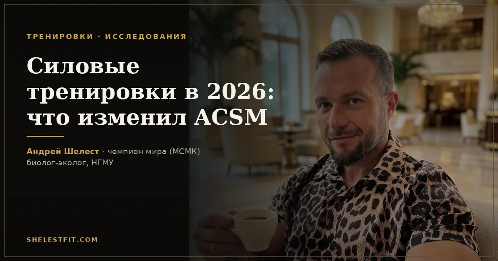

Силовые тренировки в 2026: что изменил ACSM
11 августа 2026 · Андрей Шелест

Американский колледж спортивной медицины (ACSM) в апреле 2026 выпустил новый position stand по силовым тренировкам — первое серьёзное обновление за 17 лет. В основе — анализ 137 исследований и данные больше 30 000 участников. Разбираю по пунктам, что реально поменялось и что с этим делать на практике.
Сколько раз тренировать одну группу мышц
Минимум два раза в неделю. Раньше многие программы строили сплит на одну мышцу раз в неделю: день ног, день спины, день груди. Такая схема до сих пор работает, но ACSM прямо говорит: при равном общем объёме частота в два-три раза в неделю на группу мышц даёт результат лучше.
Для новичка на практике это чаще всего фулбоди три раза в неделю — жим, тяга, присед, и по кругу. Такая частота не даёт мышце «остыть» между стимулами. Плюс в первые полгода-год прогресс идёт в основном за счёт нервной адаптации, а не за счёт роста самой мышечной массы, и здесь частые тренировки помогают быстрее закрепить технику.
Сколько подходов нужно в неделю
Для гипертрофии, то есть роста мышц, базовая цифра — около 10 рабочих подходов на группу мышц в неделю для начинающих и среднего уровня. Опытным атлетам объём можно поднимать до 15-25+ подходов в неделю, но не сразу.
ACSM отдельно ограничивает скорость прогрессии: увеличивать недельный объём больше чем на 10% за раз не стоит. Правило старое, пришло из бега и циклических видов спорта, но новый документ прямо переносит его и на силовую. Резкий скачок объёма чаще травмирует, чем ускоряет рост.
Обязательно ли работать до отказа
Нет — и это, пожалуй, главное изменение. Раньше считалось, что для гипертрофии нужно доводить почти каждый подход до отказа. Новая позиция ACSM: для среднего взрослого достаточно оставлять 0-3 повторения в запасе, и рост мышц будет практически такой же, как при полном отказе.
Разница по результату есть, но она небольшая, а риск того не стоит. Подход до полного отказа сильнее нагружает суставы и связки и требует больше времени на восстановление между тренировками. Если вы тренируетесь ради здоровья и формы, а не готовитесь к соревнованиям, оставлять 1-2 повторения в запасе — разумный компромисс, а не халтура.
Сколько отдыхать между подходами
Для роста мышц — 2-3 минуты между подходами. Это больше, чем советовали раньше: старая рекомендация была 60-90 секунд. Для чистой силы — 3-5 минут. Для мышечной выносливости хватает 30-60 секунд.
Логика простая: мышце нужно частично восстановить запасы АТФ и креатинфосфата, чтобы следующий подход прошёл качественно, а не для галочки. Короткий отдых экономит время в зале, но снижает объём полезной работы за тренировку — а это ровно тот показатель, который двигает рост.
Сила и мощность — это разные вещи
Для силы — работа с весом около 80% от разового максимума (1ПМ), 2-3 подхода. Для мощности, то есть взрывной силы, — 30-70% от 1ПМ, но с максимально быстрым выполнением движения.
Тренировать их одинаково не получится. Пауэрлифтер, который весь год работает только с тяжёлым весом, теряет скорость. Человек, который тренирует только скорость, не набирает максимальную силу. ACSM впервые выделяет мощность отдельным пунктом — раньше она обычно шла довеском к разделу про силу.
Что это значит на практике
Если коротко: не усложняйте. Новый документ явно смещает акцент со сложных схем и жёсткой периодизации на постоянство и разумный объём. Тип оборудования — тренажёры или свободные веса — не критичен, если частота и объём выдержаны.
Своим клиентам я и раньше не советовал работать до жёсткого отказа на каждой тренировке — не потому что предвидел позицию ACSM, а потому что на практике это выжигает людей за пару месяцев. Приятно, что теперь под этим подходом есть более крепкая доказательная база.
Автор: Андрей Шелест, тренер, чемпион мира (МСМК). Биолог-эколог, окончил Новосибирский государственный медицинский университет, специализация «экология человека».
Это ознакомительный материал, а не индивидуальная рекомендация. Программу под ваш уровень и цели я собираю персонально.